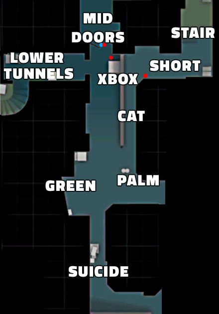

Middle

Mid is a central area of Dust2, connecting both bombsites and providing critical map control for both teams.
It consists of several key positions such as Mid Doors, Xbox and Short.
Controlling the mid-area is essential to have the most information and to be able to attack from more angles.
Controlling the mid-area in the beginning is essential for the beginning because it can give you early kills for the T-side. This is possible because of the doors in mid. In order for the CTs to get to B side the have to go there by the doors. this gives an oputrunity for the Ts to get early sniper kills
CT strategy
One players is going to hold Mid and he will be positioned in Mid Doors.
Their goal is to win mid wich provides critical map control and faster rotation.
|
T strategy
One players is going to push Mid and he will do it through Suicide.
Their goal is to win mid wich provides critical map control and more pushing angles.
|